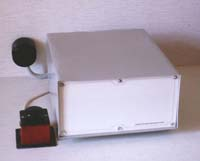
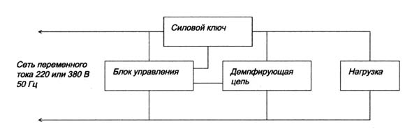
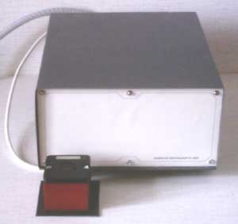
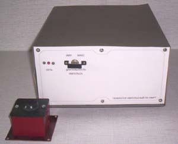
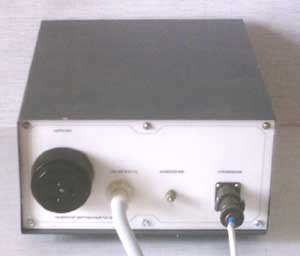

Генератор мощных
импульсов тока однополярный

Назначение
Генератор позволяет получать мощные одиночные импульсы тока
непосредственно от сети переменного тока и предназначен для использования в
составе установок намагничивания [5], в устройствах контактной сварки, ударных
электромагнитных приводах, импульсных источниках света и т. п. Отличается
простотой эксплуатации (всего одна кнопка управления) и ремонта.
Технические данные:
- форма генерируемых импульсов напряжения - синусоидальные
(половина синусоиды)
- форма генерируемых импульсов тока в активно-индуктивной
нагрузке - с экспоненциально нарастающим фронтом и экспоненциальным спадом
- максимальная амплитуда импульса тока 2000 А
- длительность импульса тока 10 ... 30 мс, может задаваться
внутрисхемно или выбираться переключателем в зависимости от модификации
прибора
- вид запуска - ручной однократный
- готовность к работе - сразу после включения
- напряжение питающей сети 220 ... 400 В (выбор
производится переключением контактов сетевой вилки)
- частота питающей сети 45 ... 65 Гц
- потребляемая мощность в режиме ожидания не более 20 В
∙ А
- максимальная частота следования импульсов 0.25 Гц (один
импульс в 4 секунды)
- время непрерывной работы при частоте следования импульсов
0.25 Гц не ограничено
- габаритные размеры не более 300 х 360 х 150 мм3
(без элементов управления и подключения)
- масса не более 10 кг
Устройство генератора
Блок-схема однополярного генератора мощных импульсов тока
приведена на рис. 1.

Рис. 1. Блок-схема генератора.
Генератор подключается к сети переменного тока напряжением 220
или 380 вольт частотой 50 Гц с низким внутренним сопротивлением. Чем ниже
внутреннее сопротивление сети, тем более мощные импульсы тока могут быть
получены [3]. Кратковременное подключение нагрузки осуществляется с помощью
силового ключа, на который подается сигнал с блока управления. Для того, чтобы к
генератору можно было подключать индуктивные нагрузки, используется демпфирующая
цепь.
На рис. 2 и 3 показан внешний вид генератора (спереди и
сзади).


Рис. 2. Генератор мощных импульсов тока однополярный,
различные модификации (вид спереди).

Рис. 3. Генератор мощных импульсов тока однополярный (вид
сзади).
Для расчета амплитуды и длительности импульса тока,
создаваемого однополярным генератором мощных импульсов тока в
активно-индуктивной нагрузке, может быть использована программа UNI [1].
Желающие приобрести или самостоятельно изготовить однополярный
генератор мощных импульсов тока могут обратиться за дополнительной информацией к
автору (см. раздел Контактная информация).
Ссылки:
- UNI: Программа расчета
параметров импульса тока в активно-индуктивной нагрузке
- Воронин А. В., Кузнецов В. М. Генератор мощных импульсов
тока на тиристорах. - ПТЭ, 1982, № 5, 90 - 91.
- Методика измерения внутреннего сопротивления источника питания
- Разоренов Г. В., Васьковский Ф. А., Гречишкин Р. М.,
Лукин А. А. Малогабаритный генератор мощных импульсов. - ПТЭ, 1976, № 2, 96.
- Установки
импульсного намагничивания и размагничивания постоянных магнитов
Словарь
терминов:
- Амплитуда импульса - максимальное
абсолютное значение величины, конкретизирующей импульс.
- Генератор импульсов - прибор или устройство для
создания последовательности импульсов.
- Длительность импульса - длительность
интервала времени, в течение которого величина, конкретизирующая импульс,
имеет ненулевое значение.
- Импульсный генератор - генератор
импульсов напряжения или тока.
- Намагничивание
- воздействие на образец магнитным полем, вследствие которого у образца
появляется отличная от нуля остаточная намагниченность.
- Электромагнитный привод - привод на
основе электромагнита.
16.03.2004
06.09.2005
12.03.2007
11.05.2007
27.06.2008
Альтернативные источники
энергии
Компьютеры и
Интернет
Магнитные поля
Механотронные системы
Перспективные
разработки
Электроника и
технология
Главная страница